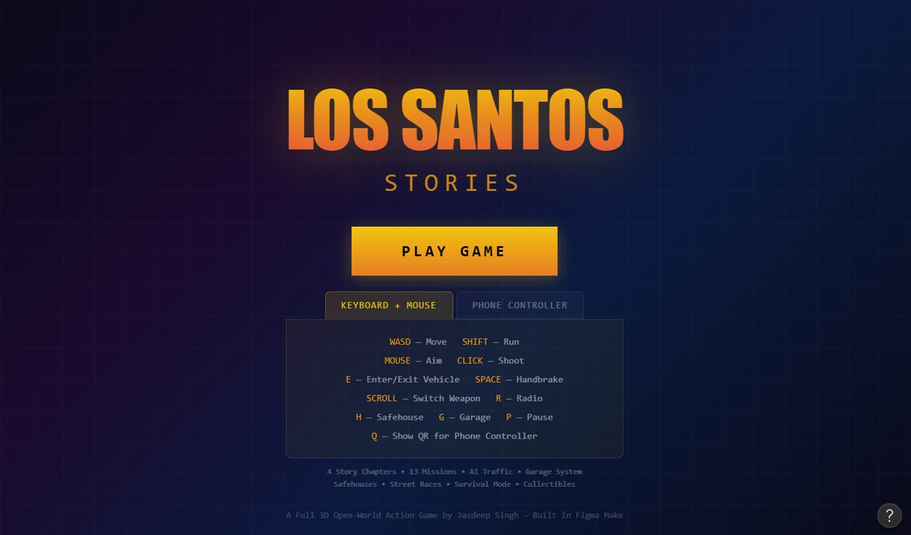
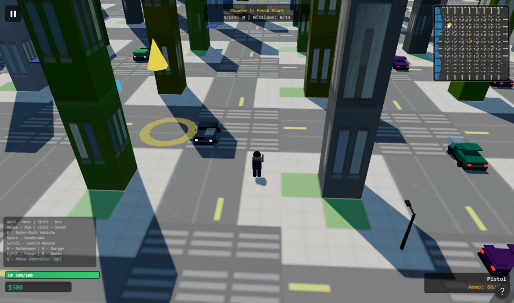

A full 3D open-world action game, designed and built in Figma Make for the Figma Makeathon by Contra. I wanted to see how far a prototyping tool could go, and it went all the way to a playable game.

"Build the next great interaction design to shape culture as we know it, using Figma Make."
Entries had to be built in Figma Make during the challenge window, published as a live site, and shared on social with #FigmaMakeathon.
Judging: 25 points, 5 per criterion.
Most entries would be apps or websites. I chose to push the boundary: a full open-world game, the kind of interaction millions of people grew up with, built entirely in a design tool. And I wanted to reimagine one iconic interaction along the way: the game controller.
I treated every prompt like a design brief: specific, visual and with clear limits. One change at a time, tested after each step.
A city and 4 story chapters, before any screen.
7 districts, each with its own density and colours.
Walking, driving, traffic and pedestrians.
Missions, police, wanted level and weapons.
Start screen and an 11-step guided tour.
Your phone becomes the gamepad.
The engine was the hard part for the tool. The experience around it was the design work.
Before playing, players choose how they'll control the game and see every key they need.
Open-world games can overwhelm new players. A short tour explains one idea per step, with the real keys shown as keycaps.
Walk up to any parked car and press E to hop in. Use WASD to drive. Press SPACE for the handbrake to drift around corners.
My take on reimagining an iconic interaction. Scan a QR code or enter a session ID, and your phone turns into a wireless gamepad for the game on your laptop.
Health, armour, money, weapon, wanted stars and the mini-map each have one fixed home on screen, so players never hunt for information mid-chase.

Specific, visual prompts with constraints gave far better results than vague asks.
One change at a time kept a large, complex game working as it grew.
The tool could build anything. Deciding what players need to see, learn and feel was still my job.
Next case study: A GenAI suite for consulting teams